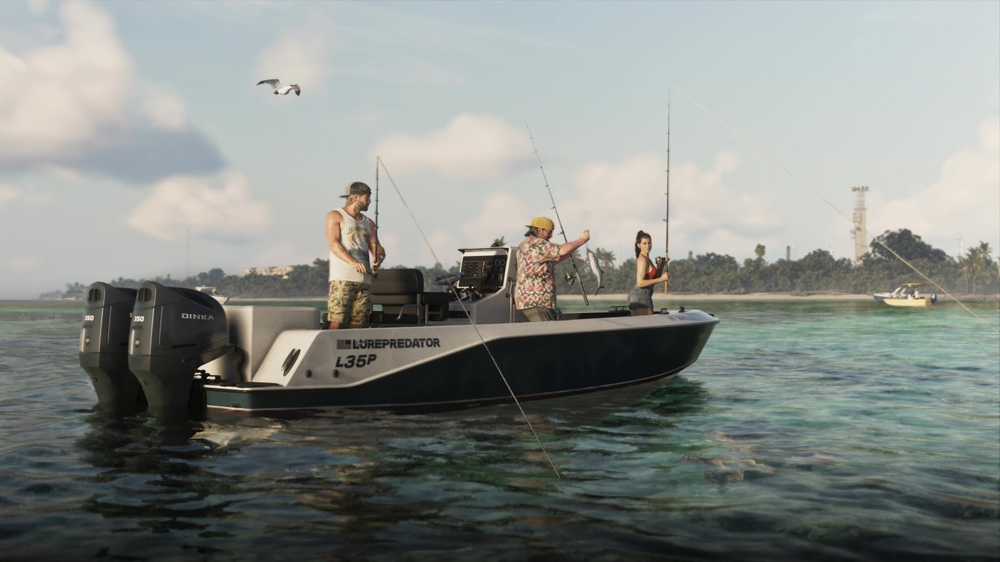
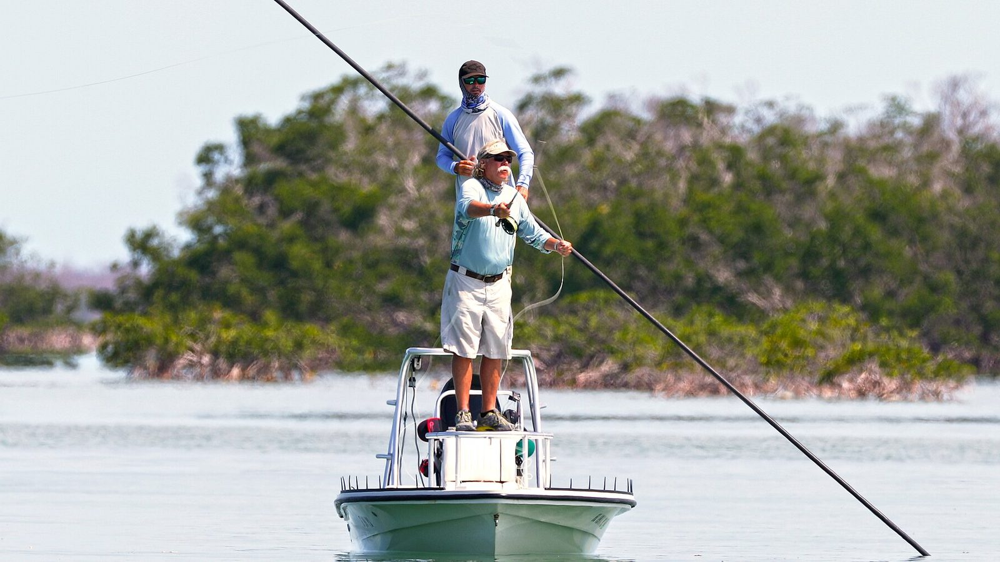

Рыбалка с катера и спортивная рыбалка Флориды
Опубликовано:
Катер с центральной консолью, два подвесных мотора, спиннинги и мелководье у острова с пальмами — обычный день для Флориды, которая называет себя мировой столицей рыбалки.


- В финале «Расширенного показа» (25:50) трое рыбачат с катера у острова с пальмами — один уже тянет рыбу.
- На борту надпись «LUREPREDATOR L35P», на корме два подвесных мотора Dinka 350.
- Флорида называет себя мировой столицей рыбалки — Fishing Capital of the World.
- Исламораду в Кис зовут мировой столицей спортивной рыбалки: она стоит между Атлантикой и Мексиканским заливом, на путях миграции крупной рыбы.
Что в игре
Кадр из финальной нарезки «Расширенного показа»: бирюзовое мелководье, вдали остров с пальмами и вышкой. Посреди воды стоит белый катер с центральной консолью. Трое со спиннингами: парень в кепке и майке, мужчина в гавайской рубашке — у него на крючке рыба, и девушка на носу. Над ними кружит чайка.
Детали сделаны со знанием дела: на борту написано «LUREPREDATOR L35P» (lure — блесна, predator — хищник), а на корме висят два подвесных мотора Dinka 350. Dinka — вымышленная марка серии GTA.
Что в реальности
Флорида официально называет себя мировой столицей рыбалки — Fishing Capital of the World. Самое известное место для спортивной рыбалки — Исламорада в Кис. Её зовут мировой столицей спортивной рыбалки: рядом проходят пути миграции крупной рыбы, есть и мелководье, и выход в открытый океан. Исламорада стала муниципалитетом в 1997 году и объединила пять островов.
Воды Кис входят в национальный морской заповедник Флорида-Кис (создан в 1990 году). Рыбачить здесь можно, но по правилам: в части зон ловля запрещена, чтобы сохранить коралловый риф.
В Исламораде есть марина Robbie’s, где туристы кормят с рук тарпонов — крупных серебристых рыб, за которыми охотятся спортивные рыбаки со всего мира.
Совпадает и отличается
| Флорида | GTA 6 | |
|---|---|---|
| Катер с центральной консолью | Да | 🟢 Да |
| Подвесные моторы на корме | Да | 🟢 Да, марки Dinka |
| Рыбалка на мелководье у островов | Да | 🟢 Да |
| Какая рыба ловится | Тарпон, парусник и другие | Узнаем в игре |
Источники: Rockstar Games — «Grand Theft Auto VI: An Extended Look», 25:50; Florida Fish and Wildlife Conservation Commission (FWC); Википедия — Islamorada, Florida; NOAA — Florida Keys National Marine Sanctuary.
Реальные фото: Фото: National Marine Sanctuaries, Public domain · Wikimedia Commons. Кадры игры: Rockstar Games.
Каждый день — одно сравнение: кадр игры рядом с реальным фото. Подписывайтесь:
YouTubeInstagramTikTok
 vs
vs
 vs
vs